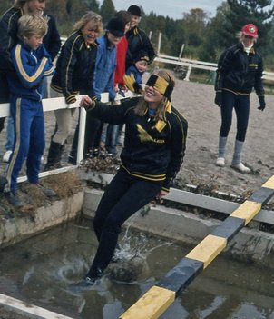

En berättelse om bakgrunden till Helenas hästverksamhet
Jag har hållt på med hästar i drygt 50 år, och jobbar till vardags som läkare vid Försvarsmakten.
År 1974 började jag min ridbana hos Bränna-Karin, där jag också var barn- och ungdomsridärare under några år, samt red och tävlade lokalt/regionalt. Foto nedan tillhör Åsa Roosqvist och är taget kring 1981, Bränna-Karin till höger och jag går i vattnet :)
År 1990 när jag flyttade jag till Uppsala och Läkarlinjen, köpte jag min första egna häst 1991, Mr Statesman, Tävlade i hoppning på 3 student-SM (med ett SM-silver och en 5:e placering i som bästa resultat), och på 3 internationella tävlingar (Frankrike, Tyskland, Irland). 4:e plats som lag på Irland. Internationellt får man nöjet att tävla både i dressyr och hoppning. Jag läste utbildningen "Avel och Utfodring av Häst" på Ultuna under 5 veckor, en fantastiskt rolig kurs (roligastekursen jag gått), som jag visste att jag skulle få nytta av, någon gång! Efter en avslutande termin vid Oxfords universitet var mina läkarstudier färdiga och jag flyttade hem till Boden 1996 för läkarjobb.
År 1994 köpte jag 2-åriga Fabian e. National Zenith xx - Curacao xx. Han fick strålande poäng i Talangjakten som 3-åring (dåtidens 3-årstest) och blev Klass 1 både i hoppning och dressyr på Strömsholm, reds av Sigrid Bergåkra. När jag var gravid reds Fabian några månader av Agnetha Lindelöw i Skåne. Fabian levde ända till han var 27 år. År 1999 köpte jag fölet Landcruiser (e. Landlord - Irco Mena - Prince Fair xx), en av underbara Månstrimmas (ELIT) fantastiska avkommor som presterat så väl nationellt som vid unghäst-VM och exp USA, Vid 5 års ålder fick Landcruiser dessvärre en akut nackskada.
År 2010 köpte jag fölet Brooklyn BC (e. Balougraph - Cap Calando) från Stall BC i Skåne, som föl. En helt fantastisk individ: 8-8 på 3-årstestet, 8-8 på uppsuttna delen, gick till semifinal som 4-åring i Breeders, hoppade Falsterbo som 5-åring samt Breeders på Flyinge samma höst, och såldes en månad senare till Lotta Hyttinen i Finland.
2012 köpte vi ett stall för att kunna ha möjlighet att ha egna avelsston för hopphästuppfödning, och det blev starten på Stjärnholm Equestrian AB. April 2012 köpte jag skimmelstoet West Somerset (f. -05, e. Cardento - Irco Marco) som betäcktes med Casall-sonen Cabachon. Fölet Confidence SH blev vårt välkomna första föl, en mörk skönhet som blev skimmel som sin mamma. Confidence såldes till hoppryttaren Sara Nilsson i Skåne. Numera bor hon i Uppsala och är avelssto, har fått 2 hingstföl (e. Diarado samt e. Diamant de Semilly). I december 2012 köpte jag mörkbruna stoet Polly (f. -07 e. Irco Mena - Magritte).
I april 2013 köpte jag fuxfärgade stoet Qui-Qui Line (f. -06) , med fantastisk stam: e. Quidam de Revel - Quito de Baussy. Hennes son Balisco Line vann som 7-åring i Falsterbo.
I maj 2014 köpe jag Lacombe f. -97, helsystern till min förra häst Landcruiser. Hon har gått som avelssto och fött många fina föl, 2015 fick hon sitt sista föl, Champagne SH, och i december 2015 fick tyvärr fina Lacombe gå till de sälla jaktmarkerna.
2015 köpte jag Part Two (f.-00) e. Cortus-Ralmé Z, ett sto som tävlat framgångsrikt upp till int 1,40 och hon är storasyster till välkända Nice Stephanie.
2016 köpte jag Diva f.-00 (Cardento - Lenski), och äntligen hade jag två fina Cardento-ston i avell! Divas föl Atmosphere SH blev det första fölet vi sålde utomlands. Han är numera godkänd avelshingst.
2017 köpte jag avelsstona Wild Card (Cardento - Diaglyphard xx) och Amazing Lady (Lord Z - Levanto II) från familjen Caster samt Main Hillary från Grevlundagården/Lisen Bratt-Fredricson och Marina Björkman.
2018 inköptes systern till Hilly: Main Question (Cabachon - Irco Marco), från Victoria Almgren, Kordelia M (Cortez - Ralmé Z) från Malin Stiernstedt, och senare samma år köptes avelsstoet DiaNova (Diarado - Cardento) från Magdalena Regårdh.
2019 såldes 4 avelsston, Part Two, Polly, Kordelia M samt West Somerset, och ett sto fick tyvärr tas bort pga sjukdom, Claire de Lune. Samma år köpte vi 3 embryon i Belgien med riktiga toppstammar.
2020 köptes avelsstona Nova Scotia dÌve från Stall Hemmet, och Bellezza MagiQ från Erika Lickhammer van Helmond och Ankan Carlsson. Samma år såldes avelsstona Wild Card, Amazing Lady och Diva. 2020/2021 fick vi på Main Hillary flera frysta embryon via ICSI Chacco Blue, For Pleasure, Baloubet du Rouet samt Cornet Obolensky.
2021 fick vi en enäggstvillingdräktighet med Aganix du Seigneur vid ET på Keros i Belgien, intervention gjordes via universitetskliniken i Ghent, men det embryo som man försökte ta bort överlevde, båda gick tiden ut, och ena hingstfölet överlevde och är fantastiskt vacker! I slutet av 2021 såldes en av våra uppfödningar till USA, Celebration SH.
2022 köptes Champagne SH tillbaka av oss, Hon är sista avkomman från stoet Lacombe. På grund av skada ska fina Champagne SH få ett fortsatt liv som avelssto. Inför säsongen 2022 tog vi hem 3 dräktiga ICSI/ET ston från Holland/Danmark och fick därför flera fina föl hemma på gården, en fantastisk fölsommar! Fölen var e. Chacco Blue, Baloubet du Rouet, Conthargos, Chacootino PS, Kentucky van't Ruytershof, Heartbeat och Tangelo v/d Zuuthoeve. På hösten togs ett mottagarsto dräktigt med Cornet Obolensky hem från Holland. Stoet Main Question SH såldes till Erika Johansson, Stall Siggeboda. Stoet DiaNova fick tyvärr gå till de sälla jaktmarkerna strax efter nyår mot 2023.
Åter en lyckad fölsommar med sagolika föl e. Cornet Obolensky, Emerald, Hardrock och Heartbeat. Under senhösten såldes stona Champagne SH och Nova Scotia d'Ive för att minska ner lite då jag valde att seminera flera unga ston (3-åringar).
Året började väldigt spännande, med intensivt letande efter en fin hästgård. I början av april skrev vi äntligen kontrakt på en väldigt passande hästgård i Mälardalen, Uppland, ca 1,6 mil sydväst om Enköping. Vår nya gård är en dröm för en uppfödare!
I april kom 3 hingstföl (ICSI) från Main Hillary, och de är enormt vackra. Sen föddes 2 stoföl från bästisarna, toppstammade 4-åringarna, maidenstona Cornet's Lily Rose SH Z och Burberry SH Z. Deras föl föddes med 5 dagars mellanrum och är båda fuxar med vita tecken, och de är rätt lika varandra dessutom😃
I juli fick jag möjligheten att köpa ett stoföl från fantastiska Main-stolinjen, Main Diamond KSH från Kivla Sporthorses, Anneli Tjärnberg. Stor lycka! Hon är e. Diamant de Semilly - Kannan - Cardento - Irco Marco.
I juli övertar vi dessutom vår nya gård i Enköping 💓🏡💓